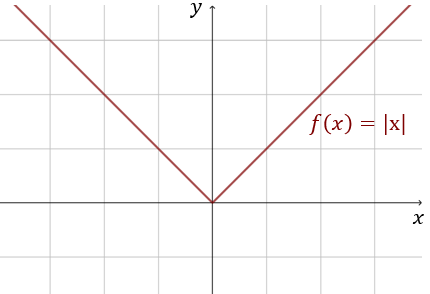
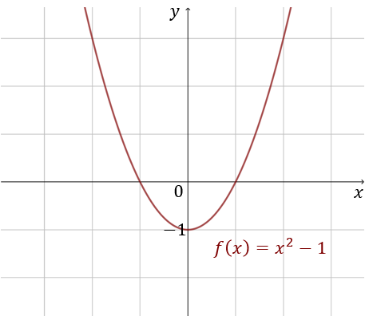
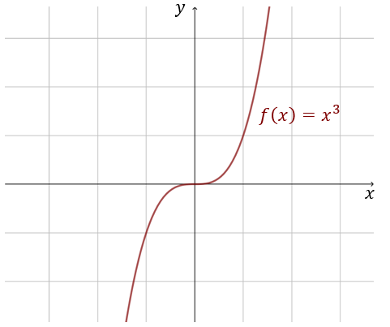
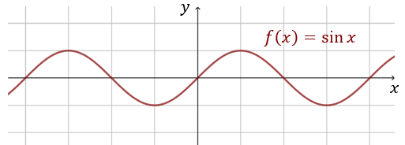
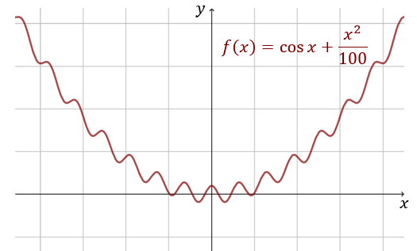

Funkcja jest parzysta, jeżeli spełnia równanie: \[f(x)=f(-x)\] czyli, gdy jest
symetryczna względem osi \(y\)-ów.
Funkcja jest nieparzysta, jeżeli spełnia równanie: \[f(x)=-f(-x)\] czyli, gdy
jest symetryczna względem początku układu współrzędnych.
Funkcja \(f(x)=|x|\) jest parzysta.  Funkcja jest symetryczna względem osi \(y\)-ów. Korzystając
z definicji możemy zapisać: \[f(-x)=|-x|=|x|=f(x)\] Czyli: \[f(-x)=f(x)\] Co uzasadnia parzystość
funkcji.
Funkcja \(f(x)=x^2-1\) jest parzysta.  Z wykresu widać parzystość, ponieważ funkcja \(f(x)\) jest
symetryczna względem osi \(y\)-ów.
Sprawdzamy parzystość z definicji:
\[f(-x)=(-x)^2-1=x^2-1=f(x)\] Czyli: \[f(-x)=f(x)\] Zatem funkcja \(f(x)=x^2-1\) jest parzysta.
Funkcja \(f(x)=x^3\) jest nieparzysta.  Funkcja \(f(x)\) jest symetryczna względem początku układu
współrzędnych.
Sprawdzamy nieparzystość z definicji: \[-f(-x)=-(-x)^3=x^3=f(x)\] Czyli:
\[-f(-x)=f(x)\] Zatem funkcja \(f(x)=x^3\) jest nieparzysta.
Funkcja \(f(x)=\sin x\) jest nieparzysta.  Funkcja \(f(x)\) jest symetryczna względem początku układu
współrzędnych, zatem jest nieparzysta: \[-f(-x)=-\sin (-x)=-(-\sin x)=\sin x=f(x)\] Czyli:
\[-f(-x)=f(x)\] Zatem funkcja \(f(x)=\sin x\) jest nieparzysta.
Funkcja \(f(x)=\cos x+\frac{x^2}{100}\) jest parzysta.  Funkcja \(f(x)\) jest sumą dwóch
funkcji parzystych:
- funkcja \(y=\cos x\) jest parzysta,
- funkcja \(y=\frac{x^2}{100}\) jest parzysta.
Sprawdzamy jeszcze z definicji: \[f(-x)=\cos (-x)+\frac{(-x)^2}{100}=\cos
x+\frac{x^2}{100}=f(x)\] Czyli: \[f(-x)=f(x)\] Zatem funkcja \(f(x)=\cos x+\frac{x^2}{100}\) jest
parzysta.
W powyższym przykładzie zauważyliśmy, że suma dwóch funkcji parzystych jest
funkcją parzystą. Podobnie jest z iloczynem. Iloczyn dwóch funkcji parzystych jest funkcją parzystą.
Zbadaj parzystość funkcji \(f(x)=\sin x \cdot \cos x\).
Sprawdzamy czy funkcja jest parzysta: \[f(-x)=\sin (-x) \cdot \cos (-x)=-\sin x \cdot \cos x\ne
f(x)\] Zatem funkcja nie jest parzysta. Zbadamy czy jest nieparzysta: \[-f(-x)=-\sin (-x) \cdot
\cos (-x)=-(-\sin x) \cdot \cos x = \sin x \cdot \cos x= f(x)\] Zatem funkcja \(f(x)=\sin x
\cdot \cos x\) jest nieparzysta.
W tym przykładzie mogliśmy również skorzystać
ze wzoru trygonometrycznego: \[\sin 2x=2\sin x \cos x\] i zauważyć, że: \[ \begin{split}
f(x)&=\sin x \cdot \cos x\\[6pt] f(x)&=\frac{1}{2}\cdot 2\sin x \cdot \cos x\\[6pt]
f(x)&=\frac{1}{2}\cdot \sin(2x) \end{split} \] Z tego równoważnego wzoru funkcji \(f(x)\)
łatwo widać nieparzystość funkcji, ponieważ funkcja sinus jest nieparzysta.
W powyższym przykładzie zauważyliśmy, że iloczyn funkcji parzystej i
nieparzystej jest funkcją nieparzystą. To jest ogólna własność, która działa zawsze dla dwóch
funkcji spośród których jedna jest parzysta, a druga nieparzysta.
Wybrane przykłady funkcji parzystych:
- funkcje stałe: \(f(x)=a\), gdzie \(a\in \mathbb{R} \),
- funkcje potęgowe o parzystym wykładniku: \(f(x)=x^{2n}\), gdzie \(n\in \mathbb{Z} \),
- funkcja trygonometryczna cosinus: \(f(x)=\cos x\),
- wielomiany z \(x\)-ami tylko w parzystych potęgach, np: \(f(x)=3x^8-2x^6+x^2+5\).
Wybrane przykłady funkcji nieparzystych:
- funkcje liniowe: \(f(x)=ax\), gdzie \(a\in \mathbb{R} \),
- funkcje potęgowe o nieparzystym wykładniku: \(f(x)=x^{2n+1}\), gdzie \(n\in \mathbb{Z} \),
- funkcja trygonometryczna sinus: \(f(x)=\sin x\),
- wielomiany z \(x\)-ami tylko w parzystych potęgach, np: \(f(x)=3x^7-2x^5+x^3+5x\).
Jedyną funkcją, która jest jednocześnie parzysta i nieparzysta jest funkcja stała
równa zero: \[f(x)=0\]
Własności funkcji parzystych i nieparzystych
- suma dwóch funkcji parzystych jest funkcją parzystą,
- suma dwóch funkcji nieparzystych jest funkcją nieparzystą,
- iloczyn dwóch funkcji parzystych jest funkcją parzystą,
- iloczyn dwóch funkcji nieparzystych jest funkcją parzystą,
- iloczyn funkcji parzystej i nieparzystej jest funkcją nieparzystą.